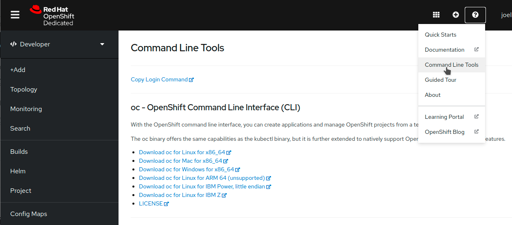

Setup
Prerequisites
The following CLI tools are required for running the exercises in this tutorial. Please have them installed and configured before you get started with any of the tutorial chapters.
| Tool | macOS | Fedora | windows |
|---|---|---|---|
|
|||
|
|
Create a Developer Sandbox Account
The first step to deploy your application is to find a cluster to host it. You could use any OpenShift cluster for this demo, but if you don’t have access to one, you can use the Developer Sandbox to have access to a free OpenShift cluster for 14 days.
To create your account, go to https://developers.redhat.com/developer-sandbox. From there, click on the red button that says Launch your Developer Sandbox for Red Hat OpenShift as shown in the following image.
Use your existing Red Hat account or create a new one, then follow the instructions on the screen. You should then be redirected to the Developer Sandbox page again, but this time, you should see a button labelled Start using your sandbox. Clicking on it opens up the OpenShift login screen where you can log in using the DevSandbox button, as seen below.
Clicking this button opens up your new OpenShift cluster console. Feel free to take the tour or skip it for now and continue with this workshop.
Configure oc
To interact with your OpenShift cluster, you need the oc CLI tool. Thankfully, the OpenShift team made it easy for you to install it. To get the CLI tool for your operating system, click on the question mark icon at the top right of the OpenShift UI. From this dropdown, select Command Line Tools. This option opens up a page with the links required to install the oc tool.

Once the tool is installed, click on the link for Copy Login Command from the same Command Line Tools page. A new window will open up with the authentication screen. Select DevSandbox, then click on the Display Tokens link on the next page.
On this new page, you can find a command that starts with oc login. Copy this whole line with the --token and --server parameters and paste it into your terminal.
oc login --token=sha256~%TOKEN% --server=https://%SERVER%:6443You should get a message back confirming that you successfully logged in to the developer sandbox.
Logged into "https://%SERVER%:6443" as "%USERNAME%" using the token provided.
You have access to the following projects and can switch between them with 'oc project <projectname>':
* %USERNAME%-code
%USERNAME%-dev
%USERNAME%-stage
Using project "%USERNAME%-code".Run the Application Locally
The application that you will deploy to this OpenShift cluster is a URL shortener and redirection service. It has a React front-end to manage your links and connects to a Node.js API. That express server then connects to a Mongo database to store and retrieve the URLs.
The is also another application called the "redirector" micro-service that performs a database lookup and redirects the traffic to the matching URL. This service is built in PHP.
You need a copy of the source code to build your container images. To do so, you can use git clone.
git clone https://github.com/joellord/urlshortenerFeel free to explore the source code of the application. If you want to run it locally, you can do so with docker-compose or podman-compose.
docker-compose upThis command starts the application in development mode. To view the application, you can open up a browser and point it to http://localhost:3000.